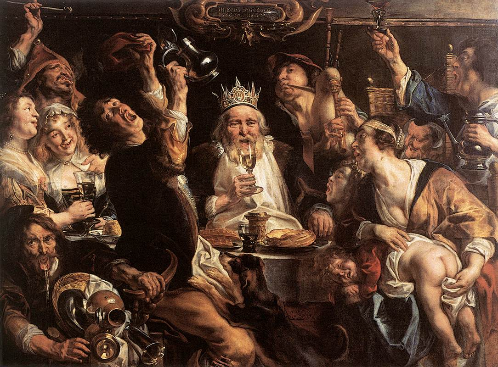
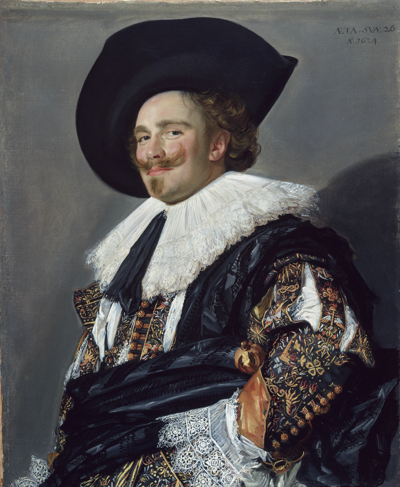
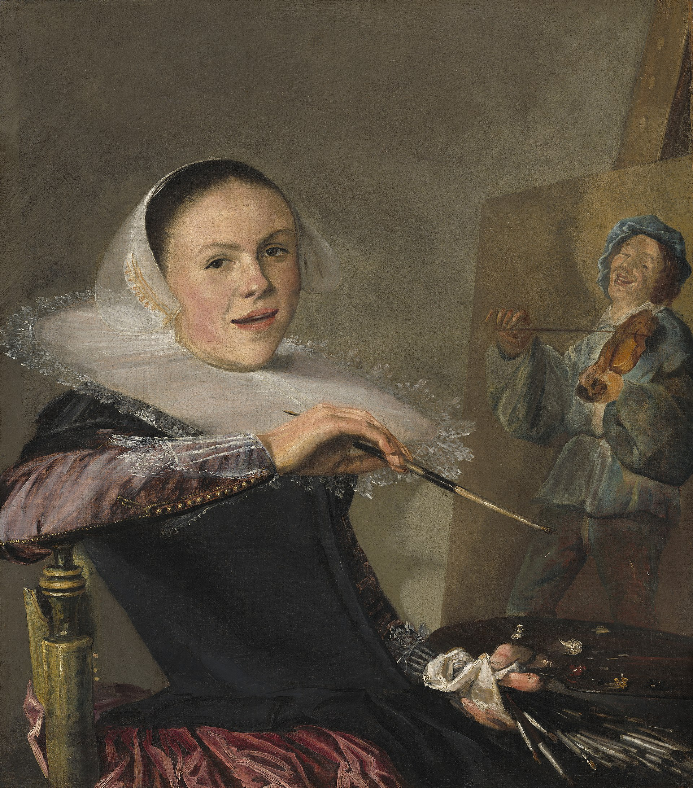
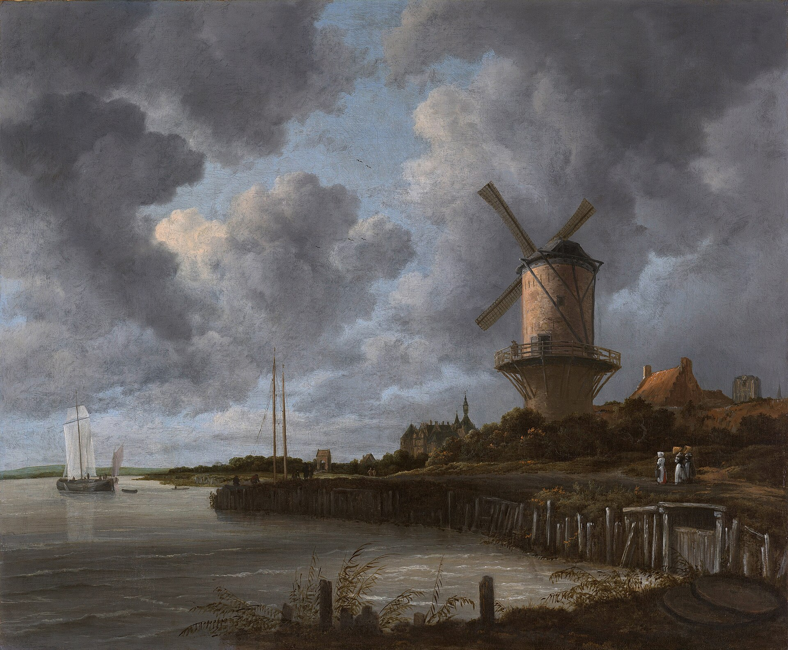
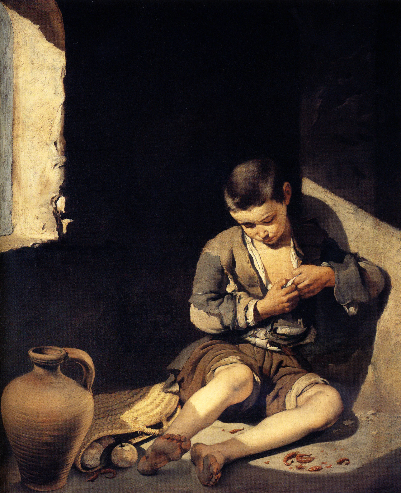
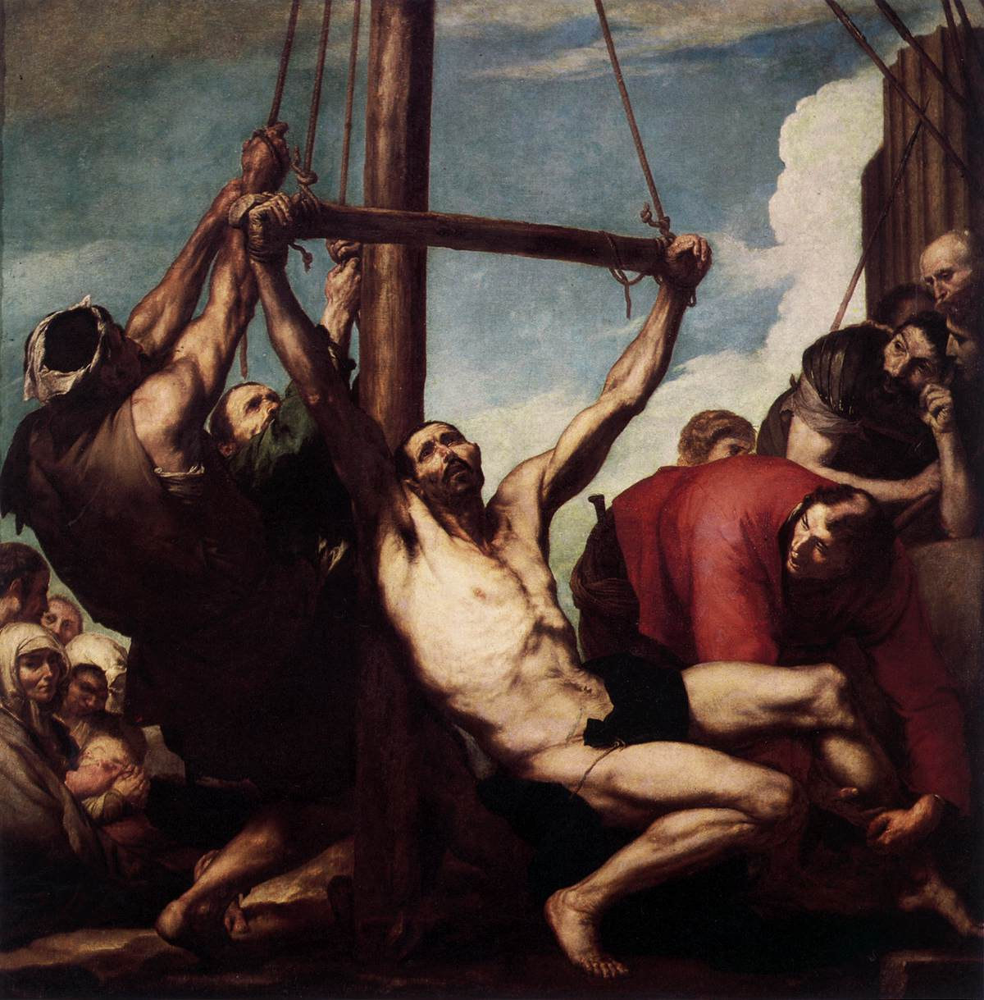
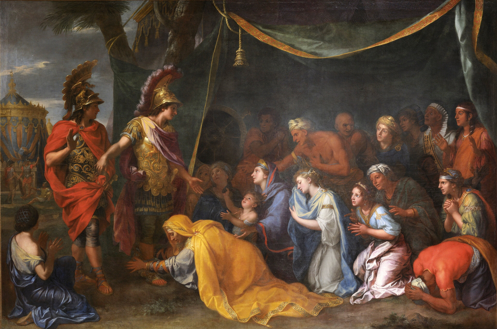
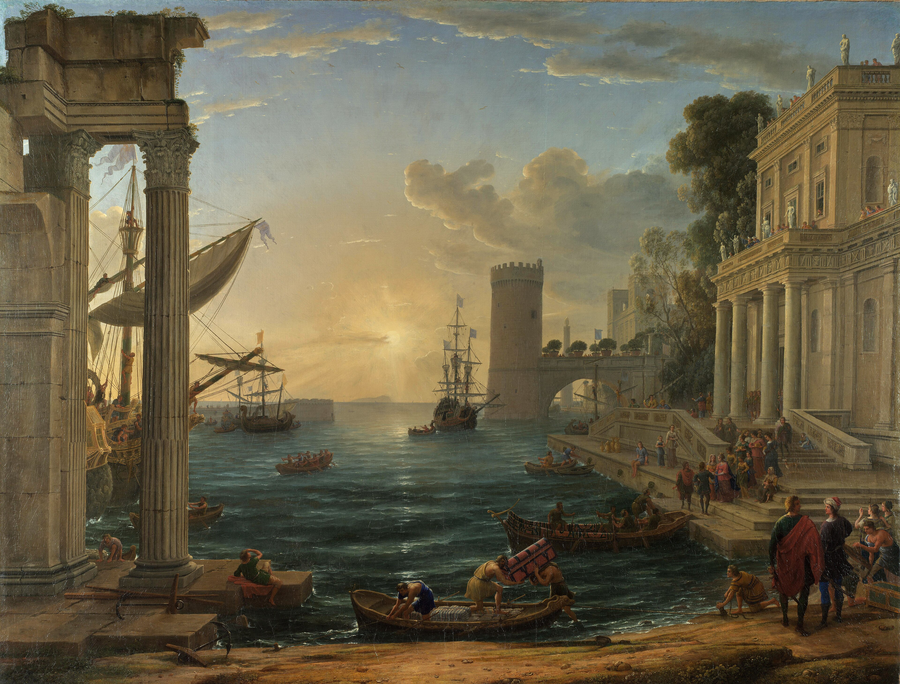
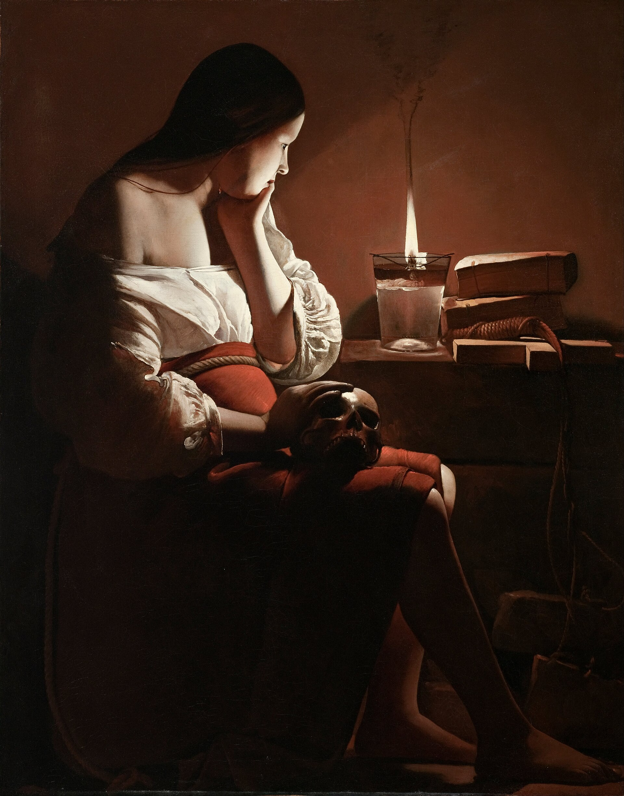

매너리즘
상세 학습
바로크는 17세기의 교회, 절대군주정, 도시 시민 시장이 각기 다른 목적에 맞게 빛, 움직임, 물질감을 동원한 넓은 범주의 미술이다. 관람자를 장면의 목격자나 참여자로 만드는 설득의 방식이 공통 축이다.
매너리즘의 인공적이고 닫힌 난해함보다 사건을 직접 체험하게 하며, 로코코는 이 장대한 공적 언어를 더 친밀하고 사교적인 실내의 리듬으로 바꾼다.
흔한 오해: 바로크를 금빛 장식이 많은 하나의 양식으로만 보면 네덜란드의 절제된 초상과 풍속화, 스페인의 엄격한 종교화, 프랑스의 고전적 질서를 설명할 수 없다.

노동자의 손, 늙은 피부, 평범한 옷까지 화면에 들어온다.
빛은 형태를 보이는 기능을 넘어 감정과 의미를 통제한다.
행동이 시작되거나 폭발하는 바로 그 찰나를 선택한다.
관람자는 화면 밖 안전한 위치에 머물기 어렵다.

매너리즘의 공식보다 살아 있는 인체와 풍경을 다시 본다.
과거의 대가들을 단순 복제하지 않고 새로운 종합을 만든다.
동작은 활발하지만 화면 전체는 명료한 구조를 유지한다.
자연에서 출발하지만 결과는 장엄하고 조화로운 이상 세계다.
| 비교 항목 | 카라바조 계열 | 카라치 계열 |
|---|---|---|
| 매너리즘에 대한 반응 | 인공성을 버리고 현실의 직접성으로 | 인공성을 버리고 자연과 고전적 질서의 결합으로 |
| 인물 | 비이상화·개별적·현실적 | 자연스러우면서도 이상화 |
| 공간 | 얕고 압축되어 관람자 쪽으로 접근 | 넓고 명료하며 전체 구성이 안정적 |
| 빛 | 강한 명암과 극적 조명 | 형태와 공간을 조화롭게 조직하는 빛 |
| 시간 | 한순간의 사건·행동 | 서사의 지속성과 조화로운 전체 장면 |
| 감정 | 직접적·격렬함 | 고양되고 통제된 감정 |
| 고대·르네상스 전통 | 상대적으로 거리를 둠 | 적극적으로 연구하고 종합 |
| 대표 매체 | 대형 제단화·캔버스 회화 | 대형 프레스코·천장화·제단화 |
| 관람자 효과 | “내 눈앞에서 일어난다” | “웅장하고 완전한 세계를 올려다본다” |
두 계열의 화면은 매우 달라 보이지만, 르네상스 후기의 정적인 완결성과 매너리즘의 양식적 인공성을 넘어 회화를 다시 살아 움직이는 경험으로 만들려 했다는 점에서는 공통된다.
관습적인 공식보다 실제 인체와 현실의 관찰을 다시 중시한다.
정적인 균형보다 변화와 동작을 화면의 중심에 둔다.
관람자가 단순히 이해하는 것을 넘어 느끼게 한다.
그림은 독립된 세계가 아니라 관람 경험을 적극적으로 설계한다.
종교·신화·역사를 더 직접적이고 강력하게 전달한다.
바로크의 공통 핵심은 움직임, 감정, 관람자의 참여, 강한 시각적 효과였다. 그러나 가톨릭 교회·절대왕정·상업 공화국 등 사회구조가 달라지면서 전혀 다른 모습으로 발전했다.
| 국가·지역·세부 사조 | 지역적 특징 | 대표 화가·제작자 | 더 볼 화가 |
|---|---|---|---|
| 이탈리아 — 이탈리아 바로크 |
| 카라바조 | 잔 로렌초 베르니니, 안니발레 카라치, 아르테미시아 젠틸레스키 |
| 벨기에 — 플랑드르 바로크 |
| 페테르 파울 루벤스 | 안토니 반 다이크, 야코프 요르단스 |
| 네덜란드 — 네덜란드 황금기 회화 |
| 렘브란트 | 요하네스 페르메이르, 프란스 할스, 유디트 레이스테르, 야코프 판 라위스달 |
| 스페인 — 스페인 바로크 |
| 디에고 벨라스케스 | 프란시스코 데 수르바란, 바르톨로메 에스테반 무리요, 후세페 데 리베라 |
| 프랑스 — 프랑스 바로크 |
| 니콜라 푸생 | 샤를 르브룅, 클로드 로랭, 조르주 드 라 투르 |
바로크는 단순히 장식이 많은 양식이 아니다. 종교개혁 이후 가톨릭 교회가 감각적으로 강한 이미지를 필요로 했고, 절대왕정과 도시 시민 사회가 각자 다른 시각 언어를 요구하면서 빛, 몸짓, 공간, 관람자의 위치가 모두 극적으로 바뀐 사조다.
문서 앞부분에서 먼저 다룬 카라바조, 아르테미시아, 카라치도 이 대표작 모음에 함께 넣었다. 두 이탈리아 출발점과 카라바조주의의 확산을 각 지역 바로크와 한 흐름으로 비교할 수 있다.
선정 이유: 카라바조는 자연주의와 테네브리즘으로 이탈리아 바로크의 관람자 참여 방식을 가장 직접적으로 보여 준다.
어두운 세속적 실내에 비스듬한 빛이 들어오며 소명의 순간을 가리킨다. 성인도 동시대 평범한 사람처럼 묘사되어 종교 이야기가 멀리 있는 전설이 아니라 눈앞의 사건이 된다.

더 볼 이유: 베르니니는 이탈리아 바로크가 회화뿐 아니라 조각과 건축을 통해 관람자를 끌어들이는 방식을 보여 준다.
빛과 대각선, 격렬한 몸짓으로 종교 체험을 현재의 사건처럼 만든 점에서 바로크의 극성이 드러난다. 조각·건축·숨은 채광을 한 무대로 결합한 것이 베르니니만의 특성이다.

더 볼 이유: 안니발레 카라치는 고전적 구성과 자연 관찰을 결합해 카라바조와 다른 이탈리아 바로크의 한 축을 세웠다.
명료한 인체와 극적인 선택의 순간은 르네상스의 균형을 유지하면서도 바로크의 서사적 에너지를 드러낸다. 여러 전통을 선별해 이상적이면서 생동하는 양식으로 통합한 점은 카라치만의 특성이다.

더 볼 이유: 젠틸레스키는 카라바조의 명암과 극적 사실성을 여성 주인공의 강한 행동으로 확장한 바로크 화가다.
어둠을 가르는 빛과 대각선의 힘은 이탈리아 바로크의 즉각적인 극성을 드러낸다. 유디트와 하녀를 실제로 힘을 쓰는 협력자로 묘사한 점은 젠틸레스키만의 특성이다.

선정 이유: 루벤스는 이탈리아의 바로크 어법을 플랑드르의 색채와 국제 궁정 문화로 확장한 중심 인물이다.
그리스도의 흰 몸이 화면을 가르는 대각선을 따라 무겁게 내려오고 여러 인물이 하나의 집단적 동작을 만든다. 육체, 색채, 감정이 동시에 밀려드는 화면이 플랑드르 바로크의 규모와 에너지를 압축한다.

더 볼 이유: 반 다이크는 플랑드르 바로크의 풍부한 붓질이 국제 궁정 초상으로 확장되는 과정을 보여 준다.
유연한 붓질과 화려한 직물은 플랑드르 바로크의 감각성을 드러낸다. 인물을 가늘고 우아하게 보이게 하면서 권위를 자연스럽게 연출한 점은 반 다이크만의 특성이다.

더 볼 이유: 요르단스는 플랑드르 바로크의 풍부한 색과 육체성이 시민 가정의 축제와 풍속 장면으로 이어진 모습을 보여 준다.
화면을 가득 채운 인물과 음식, 큰 몸짓은 플랑드르 바로크의 감각적 활력을 드러낸다. 신화나 궁정 대신 서민적 웃음과 속담을 장대한 역사화처럼 다룬 점은 요르단스만의 특성이다.

선정 이유: 렘브란트는 시민 집단 초상을 빛과 행동, 심리의 서사로 바꾸어 네덜란드 황금기의 시장과 바로크성을 함께 보여 준다.
정렬된 기념사진 대신 민병대가 막 움직이기 시작하는 순간을 포착한다. 선택적으로 떨어지는 빛은 인물의 중요도와 공간의 리듬을 조직하며 시민 사회의 활력을 드라마로 만든다.

더 볼 이유: 페르메이르는 네덜란드 황금기의 시민적 실내와 빛의 질서를 집중해서 볼 수 있게 한다.
일상의 작은 실내와 창으로 들어오는 빛은 네덜란드 장르화의 특징을 드러낸다. 고요한 순간을 정교한 색면과 광학적 빛으로 영원한 장면처럼 만든 것이 페르메이르만의 특성이다.

더 볼 이유: 프란스 할스는 네덜란드 황금시대 초상이 순간적인 표정과 자유로운 붓질을 포착할 수 있음을 보여 준다.
시민 계층의 화려한 복식과 자신감 있는 표정은 네덜란드 초상 문화의 특징을 드러낸다. 빠르게 끊어지는 붓질로 웃음과 자세의 생기를 붙잡은 점은 할스만의 특성이다.

더 볼 이유: 레이스테르는 네덜란드 황금시대의 활기찬 장르화와 여성 화가의 전문적 정체성을 함께 보여 준다.
자연스러운 웃음과 순간적인 자세, 자유로운 붓질은 시민적 초상의 생동감을 드러낸다. 작업 중인 자신을 자신감 있게 바라보는 독립 화가로 제시한 점은 레이스테르만의 특성이다.

더 볼 이유: 라위스달은 네덜란드 황금시대 풍경화가 하늘과 국토를 국가적 기억의 주제로 만든 방식을 보여 준다.
낮은 지평선과 거대한 구름, 풍차와 물길은 네덜란드 풍경의 실제 조건을 장엄하게 드러낸다. 날씨와 빛의 변화로 평범한 장소에 심리적 무게를 부여한 점은 라위스달만의 특성이다.

선정 이유: 벨라스케스는 스페인 궁정의 현실성과 회화 자체에 대한 질문을 한 작품에 결합했다.
화가, 공주, 시녀, 거울 속 왕과 왕비, 화면 밖 관람자의 위치가 서로 얽힌다. 자연스러운 붓질과 치밀한 시선 구조가 스페인 바로크를 단순한 사실 묘사보다 복합적인 회화로 이해하게 한다.

더 볼 이유: 수르바란은 스페인 바로크의 신앙적 엄숙함과 물질적 사실성을 선명하게 보여 준다.
어두운 배경과 강한 빛, 거친 흰 수도복은 스페인 바로크의 절제된 극성을 드러낸다. 과장된 행동 없이 정물처럼 고요한 인물로 순교의 무게를 전달한 점은 수르바란만의 특성이다.

더 볼 이유: 무리요는 스페인 바로크의 종교적 감성과 세비야의 일상 현실을 부드러운 빛으로 연결한 화가다.
누추한 공간과 아이의 때 묻은 발은 현실 관찰을, 따뜻하게 번지는 빛은 인간적 연민을 드러낸다. 가난을 냉혹한 기록이나 과장된 비극 대신 친밀한 정서로 전달한 점은 무리요만의 특성이다.

더 볼 이유: 리베라는 카라바조식 명암을 거친 피부와 순교의 육체에 적용해 스페인 바로크의 사실성을 강화했다.
깊은 어둠과 강한 빛, 당겨지는 몸의 무게는 순교 장면을 관람자 앞의 현실로 만든다. 성인의 고통을 이상화하지 않고 늙고 상처 입은 피부로 묘사한 점은 리베라만의 특성이다.

선정 이유: 푸생은 바로크의 감정을 고전적 구성과 윤리적 역사화로 절제한 프랑스 전개의 기준점이다.
임종한 장군을 중심으로 애도와 충성의 몸짓이 무대처럼 명료하게 배열된다. 감정은 크지만 구도는 흔들리지 않아 프랑스 바로크의 이성적 질서가 이탈리아의 즉흥적 극성과 어떻게 다른지 보여 준다.

더 볼 이유: 르브룅은 프랑스 바로크가 왕실의 권위와 아카데미의 규범으로 조직되는 방식을 보여 준다.
명료한 서사와 통제된 감정은 프랑스 바로크의 고전주의적 질서를 드러낸다. 여러 예술가를 지휘해 왕권의 이미지를 종합적으로 설계한 점은 르브룅만의 특성이다.

더 볼 이유: 클로드 로랭은 프랑스 바로크의 고전주의가 이상적 풍경과 빛의 질서로 전개된 모습을 보여 준다.
항구 건축과 작은 인물들이 떠오르는 태양을 향해 단계적으로 열리며 장대한 공간을 만든다. 서사보다 황금빛 대기와 먼 거리의 감각을 주인공으로 삼은 점은 로랭만의 특성이다.

더 볼 이유: 라 투르는 프랑스 바로크가 카라바조의 명암을 조용한 명상과 단순한 기하 형태로 바꾼 모습을 보여 준다.
촛불 하나가 얼굴과 해골을 비추며 어둠 속에 집중된 영적 분위기를 만든다. 격렬한 동작 대신 침묵과 정지로 극적 긴장을 만든 점은 라 투르만의 특성이다.